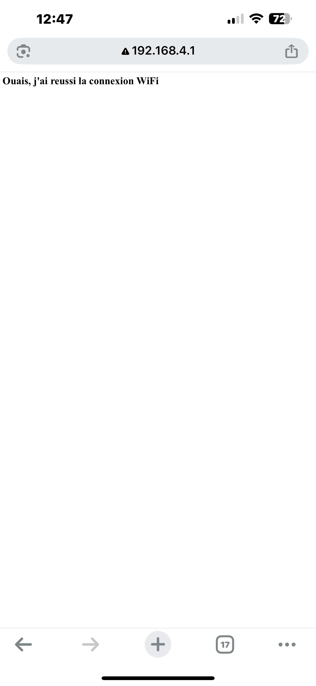

Développer une interface web de contrôle via Wi-Fi sur ESP32
Introduction de cette activité
Cette activité a pour objectif d’exploiter les fonctionnalités Wi-Fi de la carte ESP32, largement utilisée dans les
systèmes embarqués et les applications de l’Internet des Objets (IoT). Afin de structurer la démarche, il est
nécessaire d’aborder le sujet en plusieurs étapes.
Dans un premier temps, il convient d’étudier le fonctionnement global du Wi-Fi afin de comprendre les principes
fondamentaux de cette technologie de communication sans fil, tels que l’établissement d’une connexion, l’adressage
et l’échange de données. Par la suite, l’analyse sera recentrée sur l’ESP32 afin d’examiner ses capacités Wi-Fi
spécifiques, ses modes de fonctionnement (Station, Point d’Accès, ou mixte) ainsi que la manière dont ces modes
peuvent être exploités pour mon projet.
Enfin, une mise en application concrète sera réalisée sous la forme d’une communication Wi-Fi entre un utilisateur
et l’ESP32, permettant le contrôle d’une LED à distance. Cette étape nécessite la compréhension et la mise en œuvre
de notions liées aux serveurs web et requêtes HTTP, qui assurent le transport et la gestion des informations
échangées entre l’appareil client (smartphone, ordinateur) et la carte ESP32.
Ainsi, cette activité combine une approche théorique sur les bases du Wi-Fi et une application pratique visant à
démontrer le potentiel de l’ESP32 pour développer des systèmes interactifs et autonomes.
Fonctionnement global d’un Wi-Fi
Le Wi-Fi (Wireless Fidelity) est une technologie de communication sans fil basée sur les normes IEEE 802.11. Elle
permet à des appareils (ordinateurs, smartphones, objets connectés) de se relier à un réseau local (WLAN) ou à
Internet sans utiliser de câbles, en transmettant des données par ondes radio.
Le Wi-Fi repose sur un émetteur (souvent un routeur ou un point d’accès) et un récepteur (la carte Wi-Fi intégrée
dans l’appareil). Le routeur diffuse un signal radio sur les bandes de 2,4 GHz et/ou 5 GHz, et chaque appareil capte
ce signal pour échanger des données. Les informations sont envoyées sous forme de paquets identifiés par des
adresses uniques (adresses MAC et IP) afin que chaque appareil reçoive uniquement les données qui lui sont
destinées.
Un réseau Wi-Fi peut donc accueillir plusieurs utilisateurs simultanément. Le routeur gère cette communication
grâce à des techniques de multiplexage et de partage du canal radio, en attribuant à chaque appareil un temps
d’accès ou une fréquence spécifique. Ainsi, même si plusieurs utilisateurs partagent le même point d’accès, les
données envoyées et reçues sont correctement acheminées vers le destinataire grâce aux mécanismes d’adressage et de
routage.
La sécurité du Wi-Fi repose sur des protocoles de chiffrement qui ont évolué au fil du temps :
- WEP (obsolète et vulnérable)
- WPA puis WPA2 avec chiffrement AES
- WPA3 (actuel), offrant une meilleure résistance aux attaques et une sécurisation renforcée
La protection repose également sur l’usage de mots de passe robustes, la mise à jour régulière du firmware du
routeur et éventuellement des mécanismes comme le filtrage d’adresses MAC.
Sources :
Pour plus d'infomation:
Réseau Wi-Fi
Tout
savoir sur le Wifi
La connexion sans fil –
Wi-Fi : comment ça marche
Fonctionnement du Wi-Fi sur l’ESP32
L’ESP32 intègre un module Wi-Fi conforme à la norme 802.11 b/g/n, ce qui lui permet de communiquer sans fil avec
différents types de périphériques. Dans l’environnement Arduino, la gestion de cette connectivité est assurée par la
bibliothèque WiFi.h, qui fournit les outils nécessaires pour configurer, contrôler et surveiller les connexions
réseau. Il peut fonctionner en 3 modes :
- Station (WIFI_STA) : la carte agit comme un client Wi-Fi et se connecte à un point d’accès existant
(routeur, box Internet, partage de connexion mobile). Elle peut alors accéder à Internet ou échanger des données
avec d’autres appareils du même réseau..
- Point d’Accès (WIFI_AP) : l’ESP32 crée son propre réseau local et permet à d’autres appareils (PC,
smartphone, ESP32) de s’y connecter directement. Ce mode ne donne pas accès à Internet, mais il est
particulièrement adapté aux applications de configuration locale ou de contrôle direct.
- Mixte (WIFI_AP_STA) : : l’ESP32 combine les deux précédents, en se connectant à un réseau externe tout en
offrant simultanément son propre point d’accès. Ce mode hybride est particulièrement utile lorsqu’il est
nécessaire de conserver un accès à Internet tout en maintenant une interface locale pour des périphériques
connectés directement à l’ESP32..
La mise en œuvre du wifi repose sur deux bibliothèques principales : WiFi.h, qui assure la gestion des connexions
sans fil, et WebServer.h, qui permet de créer un serveur HTTP léger intégré au microcontrôleur. Ce serveur rend
possible l’affichage d’une interface web et le traitement des requêtes des clients connectés.
Sources complémentaires :
Notion du serveur web et requêtes HTTP avec l’ESP32
Un serveur web est un système informatique, matériel ou logiciel, chargé de répondre aux demandes des clients
(navigateurs ou applications) en utilisant le protocole HTTP. Lorsqu’un utilisateur saisit une adresse (comme
http://192.168.1.10 ou www.google.com) dans son navigateur, celui-ci envoie une requête HTTP au serveur. Cette
requête correspond à une question ou une demande de ressource (une page web, une image, une donnée..). Le serveur
traite alors la requête et renvoie une réponse, le plus souvent sous forme d’une page HTML, CSS ou JavaScript. Si la
ressource n’existe pas, le serveur répond tout de même mais avec un code d’erreur (par exemple 404 Not Found).
Dans le cas de l’ESP32, ce microcontrôleur peut être configuré pour jouer le rôle de serveur web grâce à la
bibliothèque WebServer.h. Une fois connecté en Wi-Fi, il est capable d’héberger une petite page HTML, crée par le
programmeur. Cette page est alors accessible depuis tout appareil connecté au réseau wifi de l’ESP32.
Lorsqu’un utilisateur interagit avec cette interface crée par le programmeur, par exemple en cliquant sur un bouton
"Allumer LED", le navigateur envoie une requête HTTP vers l’ESP32. Ce dernier analyse l’URL ou les données reçues,
exécute l’action correspondante comme activer une sortie GPIO, puis renvoie une réponse au client. La réponse peut
une mise à jour d’information ou une simple confirmation.
Ainsi, l’ESP32 remplit un double rôle : d’une part, il agit comme serveur web, en fournissant une interface
utilisateur via une page HTML, et d’autre part, il reste un contrôleur matériel, en traduisant les requêtes reçues
en actions physiques sur ses périphériques. Cela permet de créer des applications locales simples, comme le pilotage
d’une LED ou l’affichage en temps réel de données issues de capteurs.
Sources complémentaires :
Qu’est ce qu’un Serveur Web et Comment ça Marche ?
Qu’est-ce qu’un serveur web et comment
fonctionne-t-il
Construire
un serveur Web ESP32: le guide complet pour les débutants
Mise en œuvre du Wi-Fi en mode Point d’Accès
Dans le cadre de cette activité, l’ESP32 a été configuré en mode Point d’Accès (WIFI_AP). Ce choix a pour
objectif de créer un réseau Wi-Fi autonome, sans dépendre d’un routeur ou d’une connexion Internet. Ainsi, tout
appareil équipé du Wi-Fi (ordinateur, smartphone ou autre ESP32) peut se connecter directement au réseau généré
par la carte.
Le premier programme a pour but de vérifier que l’ESP32 est bien capable de générer son propre point d’accès et
de répondre à des requêtes HTTP simples :
#include <WiFi.h> // Bibliothèque pour gérer le WiFi de l’ESP32
#include <WebServer.h> // Bibliothèque pour créer un serveur web
const char* ssid = "Bouba"; // Nom du réseau Wi-Fi créé par l’ESP32
const char* password = "Diallo12345"; // Mot de passe du réseau
// Création d’un serveur web sur le port 80 (port par défaut de HTTP)
WebServer server(80);
// Fonction qui génère la page d’accueil
void handleRoot() {
server.send(200, "text/html", "<h1>Ouais, j'ai reussi la connexion WiFi</h1>");
}
void setup() {
delay(1500); // Petite pause : l’ESP32 a besoin de temps au démarrage
WiFi.mode(WIFI_AP); // Activation du mode Point d’Accès (AP)
WiFi.softAP(ssid, password); // Création du réseau Wi-Fi avec nom et mot de passe
delay(500); // Pause pour laisser le temps à l’ESP32 de bien initialiser le Wi-Fi
server.on("/", handleRoot); // Quand un client va sur "/", on appelle handleRoot()
server.begin(); // Démarrage du serveur web
}
void loop() {
server.handleClient(); // Vérifie en permanence si un client envoie une requête HTTP
}
Ici, l’objectif est simplement de créer un réseau Wi-Fi et de vérifier qu’on peut accéder à l’ESP32 depuis un
navigateur. Quand on tape l’adresse IP de l’ESP32 (192.168.4.1), la page affiche un message de confirmation.


Dans ce programme, l’ESP32 génère une page web interactive avec des boutons permettant de contrôler deux LEDs :
#include <WiFi.h>
#include <WebServer.h>
// Nom et mot de passe du Wi-Fi créé par l’ESP32
const char* ssid = "Bouba";
const char* password = "Diallo12345";
// Serveur web sur le port 80
WebServer server(80);
// Broches utilisées pour les LEDs
const int ledRouge = 22;
const int ledVerte = 23;
// Fonction qui crée la page web avec les boutons
void handleRoot() {
String page = "<!DOCTYPE html><html><head><meta charset='utf-8'><title>LED ESP32</title></head><body>";
page += "<h1>Contrôle LEDs 🚦</h1>";
page += "<p><a href='/rougeOn'><button>Allumer Rouge 🔴</button></a>";
page += "<a href='/rougeOff'><button>Éteindre Rouge ⚫</button></a></p>";
page += "<p><a href='/verteOn'><button>Allumer Vert 🟢</button></a>";
page += "<a href='/verteOff'><button>Éteindre Vert ⚫</button></a></p>";
page += "</body></html>";
// Envoie de la page HTML au client
server.send(200, "text/html", page);
}
void setup() {
// Configuration des broches comme sorties
pinMode(ledRouge, OUTPUT);
pinMode(ledVerte, OUTPUT);
delay(1500); // Pause avant d’activer le Wi-Fi
WiFi.mode(WIFI_AP); // Mode Point d’Accès
WiFi.softAP(ssid, password);// Création du réseau Wi-Fi
// Définition des routes HTTP
server.on("/", handleRoot);
server.on("/rougeOn", [](){ digitalWrite(ledRouge, HIGH); handleRoot(); });
server.on("/rougeOff", [](){ digitalWrite(ledRouge, LOW); handleRoot(); });
server.on("/verteOn", [](){ digitalWrite(ledVerte, HIGH); handleRoot(); });
server.on("/verteOff", [](){ digitalWrite(ledVerte, LOW); handleRoot(); });
server.begin(); // Démarrage du serveur web
}
void loop() {
server.handleClient(); // Vérifie et traite en continu les requêtes HTTP
}
Chaque bouton correspond à une requête HTTP (/rougeOn, /rougeOff, /verteOn, /verteOff). Quand l’utilisateur
clique, l’ESP32 exécute l’action correspondante (allumer/éteindre une LED) et recharge la page.

Conclusion et analyse personnelle
Cette activité m’a permis de mieux comprendre le fonctionnement du Wi-Fi, non seulement de manière générale, mais
aussi de façon concrète à travers la mise en œuvre sur l’ESP32. J’ai appris à configurer la carte en mode Point
d’Accès, à mettre en place un serveur web embarqué, et à gérer des requêtes HTTP permettant le contrôle de
périphériques simples comme des LEDs.
Sur le plan technique, cette expérience a montré qu’il est possible de réaliser une communication locale et
autonome entre différents appareils sans dépendre d’un routeur ou d’une connexion Internet. Elle constitue donc
une base solide pour développer des applications plus avancées en domotique et en IoT.
D’un point de vue personnel, cette activité a réellement renforcé mon intérêt pour les communications sans fil. La
simplicité avec laquelle il est possible de créer une interface web accessible depuis n’importe quel appareil
connecté m’a particulièrement séduit. Elle ouvre de nombreuses perspectives et me motive à approfondir mes
connaissances, notamment dans la gestion des serveurs web, l’optimisation des échanges de données, et
l’interconnexion de plusieurs objets connectés.